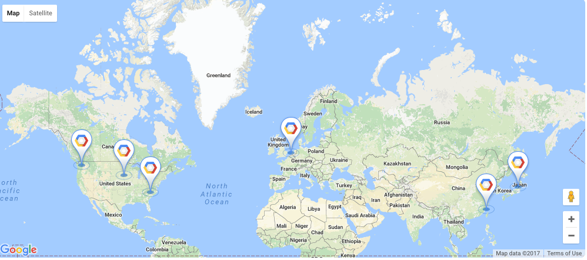
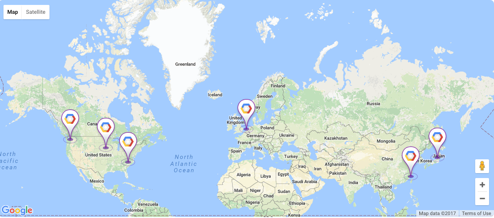
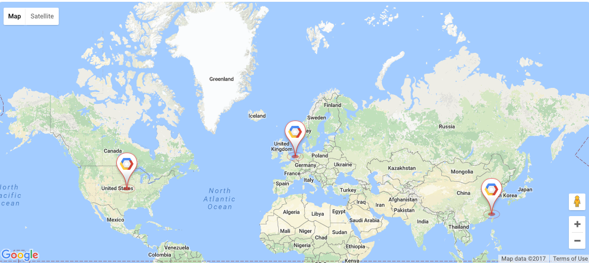
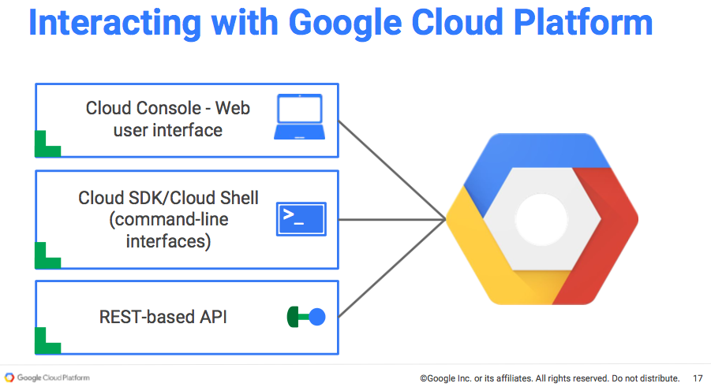
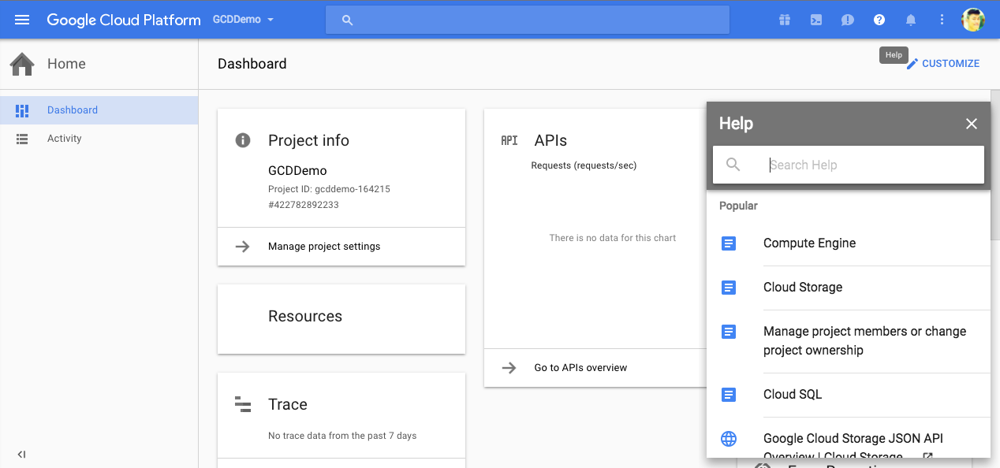
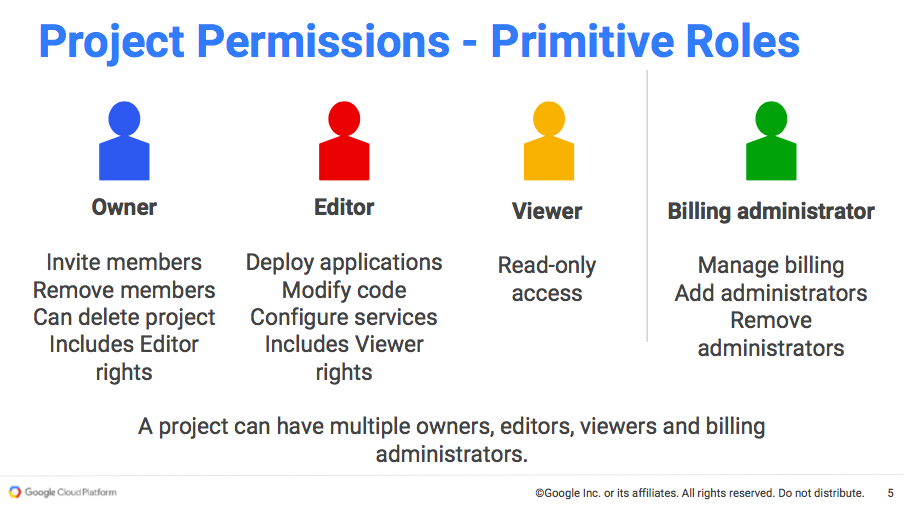
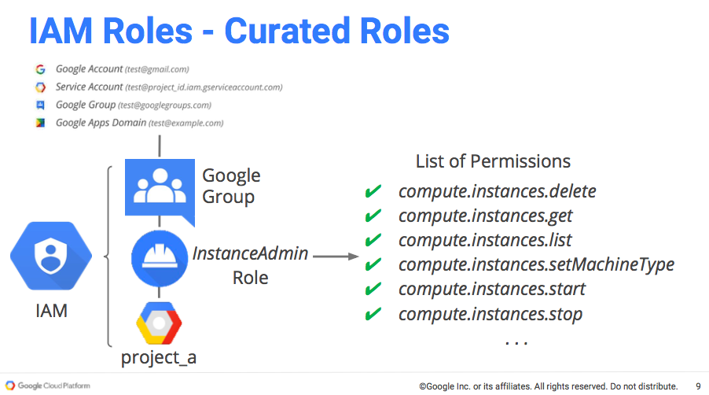
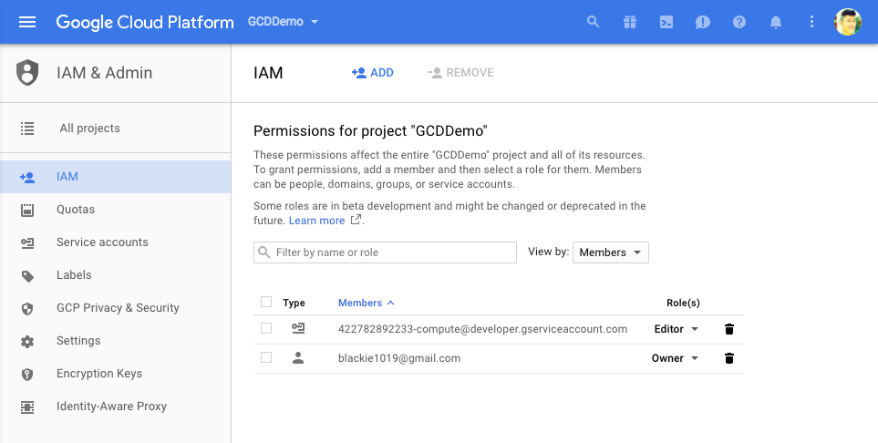
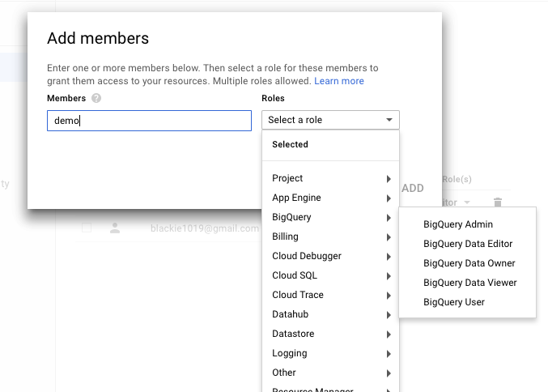
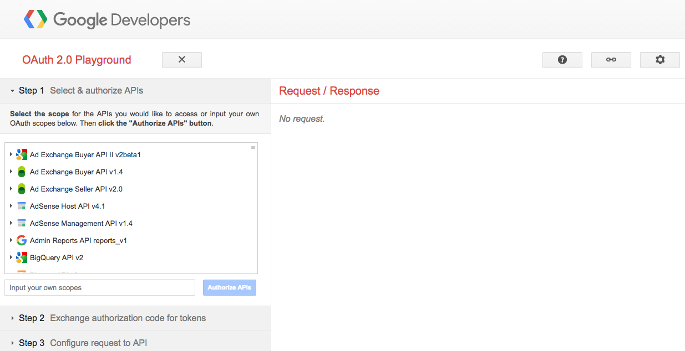

介紹一下Google Cloud與透過Google Compute Engine建設第一個ASP.NET雲端應用程式
Google Cloud Platform Overview
Google Cloud Platform(GCP)是由Google在2008年preview，在2011所公開的雲端服務，它包含了Google核心基礎架構、資料分析和機器學習技術．
GCP也是第一個獲得 ISO 14001 認證 與 100% 減碳的雲端服務．
Data Center, Backbone, Points of Presence, and Edge Caching
GCP在台灣最大的優勢是在彰濱有建立Data Center，加上Google積極的建設各地Data Center的海底光纖纜線強化本身的網路骨幹(Backbone) ．換言之GCP的服務應該比AWS與Azure的基礎建設品質會好不少．
Cloud Regions and Zones
Regions
- Regions are specific geographical locations where you can run your resources
- Are collections of zones
- Regional resources are available to resources in any zone in theregion
Zones
- Isolated locations within a region
- Zonal resources are only available in that zone

Network
針對Network在不同的Region與Zone的流動可以參考：

CDN則有另外一個：

Zonal Coverage, Regional Coverage, and Multi-Regional Coverage
針對High Availability與Disaster Recovery有分為幾種做法：
Zonal Coverage
我們可以將程式部署到一個或多個Zone當中

Regional Coverage
也可以自動擴展到指定的Region

Multi-Regional Coverage
甚至自動在多個Region內做擴展，這邊雖然是多個但還是有地理位置的限制：

Customer-Friendly Pricing
Sub-Minutes billing
以分計費，相對於AWS與Azure這點的確太強大了
Sustained-use discounts
如果當月使用超過25%的時間，則另外還可以得到優惠．算是一種鼓勵使用的優惠
Compute Engine custom machine types
對於不同規格的硬體(Infrastructure)需求可以隨心所欲的配置．也有提供同於AWS與Azure用定好的分類來給使用者．
Big Query
如果需要估價可以參考online pricing calculator
GCP Serivce
目前有以下服務：

而因為服務的定位不同從IaaS到PaaS都有包含，如應用程式就可以分為三種：

Apply Free Trial Account
目前Google有提供申請Google Cloud Platform Free Tier帳戶，該帳戶在未來的12個月都可以享有300美金的試用，這對於要做POC或是小型專案的轉移應該非常足夠了．

而在試用階段會對每個服務有限制的使用，對於限制細節可以參考View details
而如果你還有經銷商的Partner Credit，則可以上Google Platform Partner Credit貼寫申請．這邊送出後會有人工審核，審核完才會提供redem code．
Google Cloud Platform Project
所有的GCP services are associated with a project that is used to:
- 追蹤資源(resource)與配額(quota)usage
- 啟用帳單扣款(Enablebilling)
- 管理 權限(permissions)與授權(credentials)
- 啟用 services 與 APIs
Projects 有三種識別屬性(identifying attributes):
- Project Name
- Project Number
- Project ID(有些地方會稱為Application ID)
開好專案後我們再回到首頁可以從Dashboard這邊看到我們帳戶相關的資料：

這邊與AWS不同的是，GCP以專案作為分類，所以對於專案內使用到的Serivce與目前金額都可以在這邊一次總覽．
Cloud Shell, Cloud Help, and Cloud Notification
在首頁上方的工具列可以看到下面三個功能：
Cloud Shell
是一個預設安裝的工具，我們可以透過它做服務的建立或是專案的環境建置設定等等，如果想了解更多可以參考Learn More

除了Cloud Shell外，還有兩種工具可以幫我們建置服務環境 - Cloud SDK 與 RESTful APIs

Cloud Help
這邊我們可以針對任何GCP的服務或內容進行查詢，對於新技術也可以在這邊做了解．

Cloud Notification and Activity
這邊會顯示你的服務異動內容，可以作為稽核的延伸使用．

Cloud IAM and Project Role
Cloud IAM 包含 Identity 與 Access Management相關設定

針對 Cloud IAM 有兩種角色類型:
- Primitive roles: The roles historically available in the Google Cloud Platform Console. These are the Owner, Editor, and Viewer roles.
- Curated roles: Curated roles are the new IAM roles that give finer-grained access control than the primitive roles (discussed in the next section).
被授權的團隊成員可以有三種存取權限 :
- “can View” allows read-only access.
- “can Edit” allows modify and delete access. This allows a developer to
deploy the application and modify or configure its resources. - “is Owner” allows full administrative access. This includes the ability to
add members and set the authorization level of team members.

Cloud IAM的帳號可包含：
- Google Account(xxx@gmail.com)
- Service Account(xxx@project_id.iam.gserviceaccount.com)
- Google Group(xxx@googlegroup.com)
- Google App Domain(xxx@example.com)
而整個階層可以如下做管理：

IAM - Accounts

而當我們新增帳戶的時候就可以指定你要給予的服務權限有哪些

IAM - Service Accounts
- JSON Key
- P12 Key
建議使用JSON Key．專案內的Default Account建議不要刪除，因為刪除後如果需要還原需將專案下所有資源移除，這動作會相當於重開一個新專案…所以以下這句話很重要(所以要講三次)：
建議大家先不要將Default Account移除
建議大家先不要將Default Account移除
建議大家先不要將Default Account移除
Google Cloud SDK
Google Cloud SDK是一個官方推出的Command-line工具．
除了該工具，我們也可使用 Docker image，也可透過 Cloud Shell直接執行指令來建置
Download and Documents
Setup
首先須將python更新至2.7版以上，然後依序執行下面指令
curl https://sdk.cloud.google.com | bash重啟shell或是透過下面指令直接重啟
exec -l $SHELL接著我們初始化sdk，這個步驟會將登入資料跟設定記憶在該電腦環境中
gcloud initCreate Project
登入 Google Cloud Platform console 並建立一個新專案：
Using Cloud Launcher and Google Compute Engine for ASP.NET (.NET 4.5.2)
接著我們透過Cloud Launcher 幫我們建立一個ASP.NET專案，我們只需設定建置的region與規格，而他所建立的細節內容如下
| Title | Spec Detail |
|---|---|
| Runs on | Google Compute Engine |
| Type | Single VM |
| Version | Windows Server (2012 or 2008) R2, IIS, SQL Express, and ASP.NET |
| Last updated | 3/17/17, 4:55 AM |
| Category | Developer stacks |
| Operating system | Windows Server 2016 |
| Package contents | Microsoft .NET Framework 4.5.2 and SQL Server Express 2016 SP1 |
等他環境deploy完成後會給你一個遠端連結與網站連結：

Trainnig Resource
GCP Online Class
Google Cloud Platform - Training Materials Access，有提供GCP相關的教學文件下載
目前已經有的課程：
- CP100A : Google Cloud Platform Fundamentals
class code : gpiclk - CPD200: Developing Solutions for Google Cloud Platform
- CPO200: Google Cloud Platform for Systems Operations Professionals
- CPB100: Google Cloud Platform Big Data & Machine learning Fundamentals
- CPB101: Serverless Data Analysis with BigQuery and Cloud DataFlow
- CPB102: Machine Learning with Cloud ML
- CPB200: BigQuery for Data Analysts
- Data Engineering on Google Cloud Platform
如果還有其他class code 麻煩跟我分享一下！
GCPUG.TW
GCPUG.TW, GCPUP是從日本開始發起的社群，而台灣社群在幾位早期至官方受訓後的前輩建立，主要希望能夠跟開發者們與雲端服務使用者分享GCP上的好用服務．目前每個月第一個禮拜都會有meetup，有時會在google 台灣辦公室主辦，有興趣進去台灣Google參觀的人不訪報名參加他們活動摟．
[補充] APIs Explorer and OAuth Playground
APIs Explorer是一個可以讓你透過瀏覽器嘗試Google APIs的一個工具．
OAuth Playground可以讓我們來測試與Google API處理時OAuth驗證的過程．透過這工具我們就可以開發所有相關的API應用程式．
